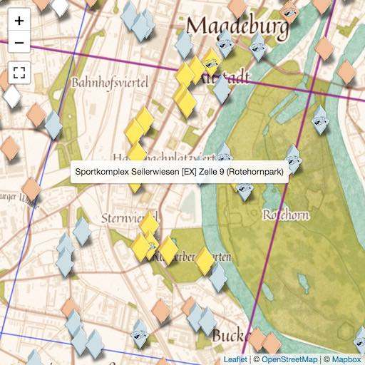

Unser Ziel ist Euer Mewtu!
Jeder von Euch möchte sicherlich gern ein Mewtu fangen. Hier erfahrt Ihr, wie das in Magdeburg am besten geht.
Raidplanung bis 29.01.
Mit den nächsten Einladungen rechnen wir für Montag den 29.01. gegen 20:00.
Bis dahin lohnen sich besonders Zoo-Zoowelle, Sportkomplex Seilerwiesen und Schlafende Schönheit.
Falls der Harry Potter Spielplatz noch mehr Raids bekommt, ist auch der ein guter Kandidat für EX-Raid-Einladungen.
Samstag bleiben wir wegen des FCM-Spiels lieber westlich der Elbe,
wahrscheinlich wieder an der Arena Power Station Erich-Weinert-Str.
Am Sonntag haben wir vor, die Arenen Holzschnecke (an der FH)
oder eine der beiden EX-Arenen im Herrenkrug zu raiden.
Zelle 1 ist generell schwer vorherzusagen, da es dort sehr viele aktive EX-Arenen gibt.
Diesen Freitag haben wir aber an der Arena Fischbrunnen an der Elbe einen Großraid mit ungefähr 100 Spielern gemacht.
Wir hoffen, damit für die Zelle 1 einen EX-Raid auszulösen, da diese ja in den letzten beiden Wochen gar keinen bekommen hat.
Wer nicht dabei war, könnte dort noch bis Montag einen Raid absolvieren.
Übrigens sind auf Grund neuer Erkenntnisse folgende Arenen doch nicht exraid-fähig:
Brauereistr Circus MuseumGraffiti LiebknechtstraßeHier Wohnte Abraham BaschKettenschleppdampfer „Gustav Zeuner“Magdeburg fährt GrünÖkozentrum MagdeburgOVGU Heissdampf-Hochdruck-LokomobileWappen Adolf MittagWasser Marsch!
Somit ist die Liste für diese Woche wie folgt:
| Zelle |
Gebiet |
Arena |
Stand |
| 2 |
Südl. Altstadt |
Power Station, Erich-Weinert-Straße |
Großraid Sa. |
| 7 |
MD Nordost |
Wartehäuschen Herrenkrug |
Großraid So. |
| 8 |
Elbauenpark |
Holzschnecke |
Großraid So. |
| 3 |
MD West |
Schlafende Schönheit |
bespielen |
| 5 |
MD Nordwest |
Harry Potter Spielplatz |
bespielen |
| 1 |
Nördl. Altstadt |
Fischbrunnen an der Elbe |
reicht schon |
| 9 |
Rotehornpark |
Sportkomplex Seilerwiesen |
reicht schon |
| 6 |
MD Nord |
Zoo, Zoowelle |
reicht schon |
Generell empfiehlt sich, jede Woche an so vielen Arenen unserer Liste wie möglich je einen Raid zu machen.
Die Raidstufe ist dabei egal, aber für jede Arena kommt man so in den „Lostopf“ mit den Einladungen (falls dann wirklich ein EX-Raid kommt).
Außerdem meldet bitte nach jedem Raid, wieviele Spieler dabei waren, damit wir besser planen können.
Gerne auch von den anderen EX-Arenen (also allen, die in dem Meldeformular aufgelistet sind).
Bitte schaut öfter mal hier rein, wir halten die Liste aktuell!
Wieso? Wie bekomme ich dadurch ein Mewtu?
Ein Mewtu gibt es nur bei einem „exklusiven Raid“ (kurz EX-Raid).
Das sind spezielle Raids, für die man eine Einladung braucht.
Aha. Wie bekomme ich eine Einladung?
An der Arena, an der der EX-Raid stattfinden wird, musst Du in den Tagen vorher mindestens einmal geraidet haben,
egal welche Stufe (selbst ein Karpador mit Stufe 1 zählt). Mit etwas Glück bekommst Du dann in der Pokémon-GO-App eine Einladung.
Diese werden ungefähr alle 7 Tage verschickt.
Muss ich den Boss fangen?
Nein. Ihr müsst den Raid-Boss besiegen, damit der Raid „zählt“. Aber auch wer ihn nicht fängt, kann eine Einladung bekommen.
Es kommt nur auf die Teilnahme an.
Muss ich die Arena auf Gold haben?
Nein. Mehr Arena-Punkte erhöhen Deine Chancen auf eine Einladung, aber es haben schon Leute Einladungen bekommen,
die an einer Arena nur ein einziges Mal geraidet haben und die vorher nicht mal auf Bronze war.
An welchen Arenen finden EX-Raids statt?

Genau da liegt der Hase im Pfeffer: Das weiß man vorher nicht so genau.
Aber wir wissen, dass nur bestimmte Arenen überhaupt für EX-Raids ausgewählt werden können.
Nur Arenen in Parks, auf Grünflächen, Spielplätzen usw. sind Kandidaten.
Das hat die Analyse von über 1000 EX-Raids ergeben (hier ist eine
ausführliche Erklärung).
Für Magdeburg sind diese Arenen in Berts Arena Tracker speziell markiert.
Wer sich wundert, dass manche Arenen knapp außerhalb des Parks zu liegen scheinen, sollte die ausführliche Erklärung lesen
und mit dieser Karte vergleichen.
Das sind ja ... mehr als 50 Arenen!
Stimmt. Glücklicherweise waren in Magdeburg die Ingress-Spieler sehr aktiv und deshalb haben wir so viele Pokestops und Arenen.
Und den Freiwilligen von OpenStreetMap haben wir die Markierung als Parks zu verdanken.
Aber bei so vielen Arenen zu erraten, welche als nächstes ausgewählt wird, ist schwer.
Es hilft aber zu wissen, dass Niantic die Welt in verschiedene Zellen eingeteilt hat.
Pro Woche findet höchstens an einer Arena pro Zelle ein EX-Raid statt,
und zwar an der, wo die meisten Spieler geraidet haben.
Falls an keiner Arena in der Zelle genügend geraidet wurde, gibt es dort gar keinen EX-Raid.
Zellen? Häh?
Die Zellen für Magdeburg sind auf der Karte im Arena Tracker
als blaue Linien eingezeichnet. Auch in der Liste ist die Zelle bei den EX-Raid Arenen vermerkt.
In Zelle 1 (Nördl. Altstadt) gibt es z.B. 10 EX-Raid Arenen.
An 4 davon haben sogar schon EX-Raids stattgefunden, sowohl an der Uni als auch im Zentrum.
Auch in anderen Zellen gab es schon vereinzelt EX-Raids.
Aber mehr EX-Raids wären besser!
Genau! Dewegen organisieren wir jetzt wöchentliche Großraids.
Wir suchen also pro Zelle eine Arena aus und raiden dort mit so vielen Leuten wie möglich.
So ein Großaufgebot „triggert“ dann hoffentlich an dieser Arena einen EX-Raid.
Wir haben so schon erfolgreich EX-Raids an Arenen ausgelöst, die vorher nie einen EX-Raid hatten.
Am Sonntag, 15. Januar 2018 haben 150 Spieler einen Raid an der Arena
„Power Station, Erich-Weinert-Straße“ gemacht, und ungefähr 60 haben EX-Raid Einladungen erhalten.
Und in der Woche darauf waren 130 Spieler beim Großraid an der Arena „Grabsteine der Familie Schneiders“ dabei,
es gab ca. 40 Einladungen.
Dies waren die ersten Male, dass in Magdeburg 3 EX-Raids in derselben Woche stattfanden.
Vorher war es immer höchstens einer. Jetzt erhalten fast 100 Spieler jede Woche eine Einladung.
Wir behalten also diese Strategie bei.
Klingt gut. Wann triggern wir?
Dieses Wochenende versuchen wir es wieder. Wir werden mehrere Arenen raiden (siehe oben).
Die genauen Raids werden dann zeitnah über die üblichen Gruppen angekündigt.
Bin dabei! Was kann ich sonst tun?
Du solltest Dir ein paar EX-Raid Arenen in verschiedenen Zellen aussuchen,
und dort jede Woche mindestens einen Raid machen (egal welches Raid-Level).
Falls an einer (oder mehreren) davon dann ein EX-Raid stattfindet, hast Du so gute Chancen auf eine Einladung.
In unserer Liste siehst Du, bei welchen Arenen wir die besten Chancen sehen.
Und nach jedem Raid wäre es schön, wenn einer der Spieler meldet,
wieviele Spieler in der Gruppe dabei waren (aber auch, wenn Du nur alleine warst). Das hilft uns bei unserer Planung.
Was ist, wenn ich schon eine Einladung habe?
Einladungen werden jede Woche verschickt. Auch wenn Du schon eine Einladung für nächste Woche hast,
kannst Du eine für übernächste Woche bekommen.
Es lohnt sich daher, jede Woche wieder an den ausgewählten Arenen zu raiden.
Ich habe immer noch Fragen!
Wir beantworten Fragen gerne in der Magdeburger Telegramgruppe.
Für die Raids verabreden wir uns im Raidkanal.
Da sind schon 500 Spieler eingetragen, viel mehr als in eine WhatsApp-Gruppe passen würden.
Telegram kannst Du Dir kostenlos runterladen,
und im Gegensatz zu WhatsApp sehen andere Leute nicht Deine Handynummer.
Es spricht also nichts dagegen, sich das „extra für Pokémon GO“ zu installieren.
Viel Spaß wünschen Eure Admins!
Bert, Eric (Gizhaiie), Lithzii, Martin (CubaLibre09), Mathis (Parzival33), Robert (Rob419)